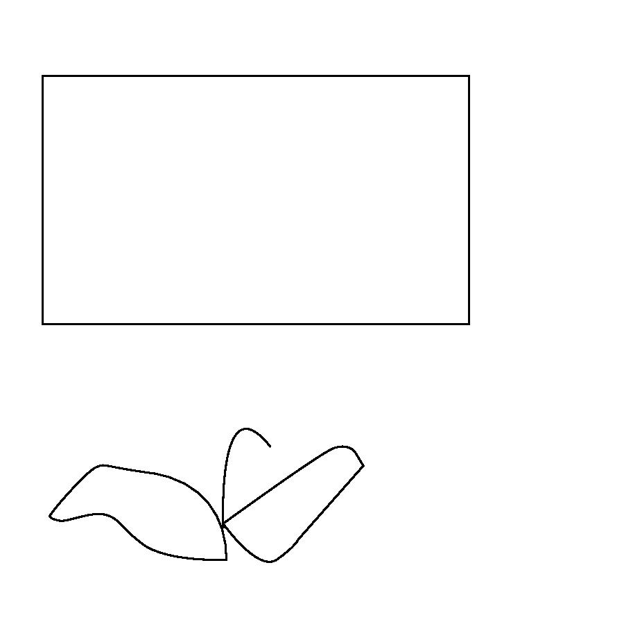
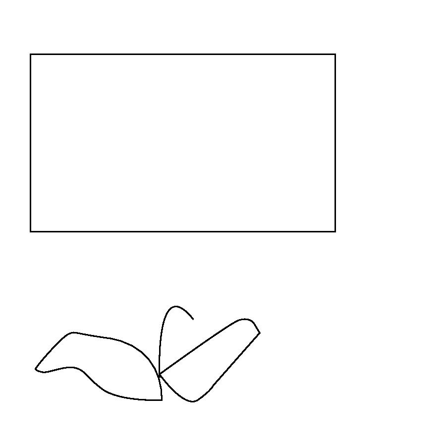

1. The first thing that you want to do is open adobe illustrator. 2. On the left of the screen you should see a tab that says "create new" press it 3. Hover over "pixels" then click until you see options, click on the option that says "inches" 4. Now delete whatever number is seen on the "width" and "height" boxes and type "6" for both so we should come out with a square. 5. Now press "create" at the very bottom. 6. On the left of the screen you should see a tool bar, click on the eighth tool down, it should look like an empty square/ rectangle. 7. Once you have selected this tool, go to the center of the page and drag the square out until you see that the "w" is 3.76 and the "h" is 3.25. 8. Then click the selection tool, which is the very first tool in the toolbar. 9. Now move the shape you have created to roughly the center by dragging it to the coordinates that read "dX: 0.14in/dY: 0in" then leave it. 10. Now we are going to go back to the rectangle tool but this time, right click until you see other shaped tools, select the "Ellipse tool" 11. Enlarge the ellipse until it the height and width say "W: 2.97/ H: 2.97" 12. Then click the selection tool. 13. Move the ellipse to the coordinates "dX: 0.01 in/dY: 0 in" 14. Then go back to the ellipse tool and right click again 15. Click on the star tool 16. Drag until the "W" is 2.03in and the "H" is 1.95in 17. Then click on the selection tool again 18. Move the star to the coordinates "dX: 0.58 in/dY: 0.86 in" 19. Now click on the square 20. Go to the "color picker" tool that is all the way in" the bottom 21. Once opened you should see a # followed by numbers and letters, insert this DBAFDA 22. Press OK 23. Click on the star and follow the same steps as the square to achieve the same color. 24. Now go to the star tool, right click and click on the rectangle tool 25. Drag the rectangle from corner to corner until the whole page is covered 26. Then go to the color picker and insert 60D8B3 27. Then go to object/ arrange/ send to back 28. Enjoy your star ball
 
